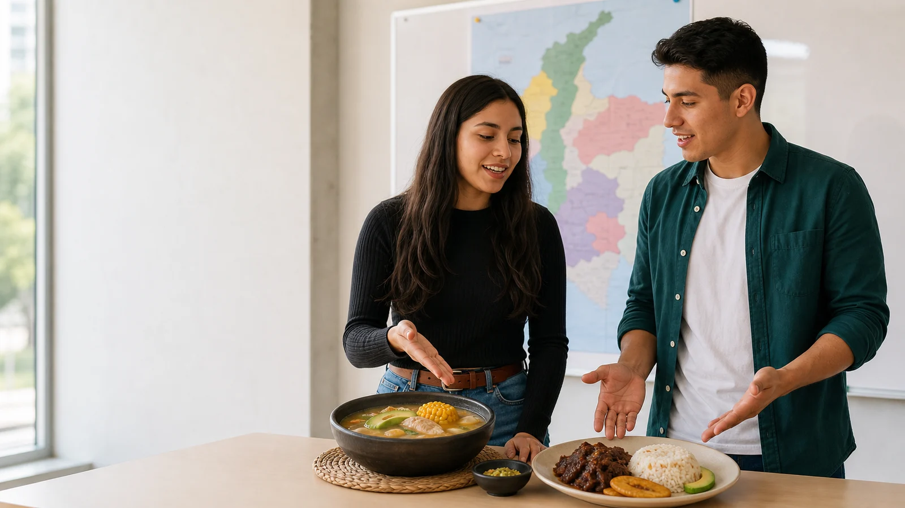
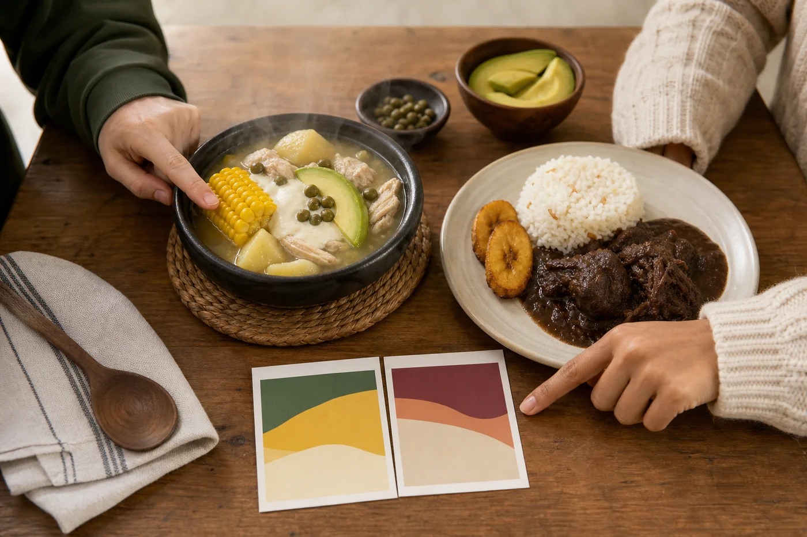

Choose two dishes
Choose two Colombian dishes from different regions, occasions, ingredients, or cooking traditions. Do not choose two dishes that are almost the same.

Practice Lab · Unit 5 · Pair speaking
Prepare one connected cultural presentation in pairs. Two speakers, two dishes, one shared message.
Student instructions
Work with one partner. Together, prepare a live cultural presentation about two Colombian dishes. Each student explains one dish, but the final presentation must sound like one shared explanation, not two separate speeches.
Choose two Colombian dishes from different regions, occasions, ingredients, or cooking traditions. Do not choose two dishes that are almost the same.
Start together. Say what the presentation is about, why you chose the dishes, and what the audience should understand by the end.
Student A explains origin or region, main ingredients, how it is prepared or served, and why it is culturally important.
Student B explains the same categories for the second dish, but connects the information to Dish A instead of starting from zero.
Each student must ask the partner one meaningful question. The answer should add information, clarify a detail, or help the audience compare the dishes.
Compare both dishes, recommend them for different people or occasions, and close with one shared final message.
Region or origin: where the dish is connected to.
Ingredients: what it is made with, made from, or served with.
Preparation: how people usually cook, mix, serve, or present it.
Culture: when people eat it and what it represents.
1. Shared opening.
2. Dish A explanation.
3. Natural handoff to Dish B.
4. Dish B explanation.
5. Questions and reactions.
6. Comparison and joint closing.
Total time: 3 to 4 minutes.
Balance: both students should speak a similar amount.
Notes: use keywords, not full paragraphs.
Visuals: use two or three coherent images or slides, not unrelated pictures.
Clarity: the audience understands both dishes.
Connection: the pair sounds coordinated.
Language: food vocabulary, quantities, made with/from/of, comparison, and future forms.
Interaction: real questions, answers, and reactions.
Student A: Ajiaco comes from the Andean region, especially Bogota. It is made with three kinds of potatoes, chicken, corn, and guascas. People usually serve it with cream, capers, and avocado. It is important because families often eat it during Sunday lunches or special gatherings.
Student B: That brings us to a very different region: the Caribbean coast. Posta negra is made with beef, onions, spices, and a dark sweet sauce. Unlike ajiaco, it is not a soup. However, both dishes are connected to family meals and celebrations.
Joint closing: We recommend ajiaco if you want something warm and comforting, but posta negra is a good choice if you prefer a rich main dish. At a food event, we are going to present both dishes so people can compare two Colombian regions through food.
The central rule
Your audience should hear one presentation built by two people. Each student is responsible for one dish, but both speakers must help introduce, connect, compare, recommend, and close.
Student A finishes every idea about Dish 1. Then Student B starts a new speech about Dish 2. There is no question, reaction, comparison, or shared conclusion.
Both students open the topic, hand ideas to each other, ask and answer naturally, compare the dishes, and finish with one recommendation.
Origin, ingredients, preparation, and cultural importance.
Origin, ingredients, preparation, and cultural importance.
Questions, reactions, similarities, differences, and recommendation.
A shared conclusion and a realistic future plan related to Colombian food.
Professional listening model
Listen for how they pass the conversation to each other. The strongest part is not the amount of information; it is the connection between their ideas.
Ready to play the complete model.
Good morning. Today, Daniel and I are taking you on a short food journey through two very different regions of Colombia.
We chose ajiaco from Bogotá and posta negra from the Caribbean coast. Together, they show how geography and local ingredients shape Colombian cooking.
Let us begin in the colder Andean region. Ajiaco is a thick soup made with three kinds of potatoes, chicken, corn, and guascas. It is usually served with capers, cream, and avocado.
Emma, which ingredient makes ajiaco different from an ordinary chicken and potato soup?
Guascas are essential because they give the soup its distinctive herbal flavor. Families often share ajiaco during Sunday lunches and special gatherings. Now Daniel is going to take us north to the Caribbean coast.
Posta negra is slow-cooked beef served in a dark, slightly sweet sauce. It is made with ingredients such as panela or brown sugar, onions, spices, and sometimes cola. Coconut rice and fried plantain are common side dishes.
That sweet and savory combination sounds very different from ajiaco. When do people usually serve posta negra?
It often appears at family celebrations and festive meals. Unlike ajiaco, it is not a soup, and its flavor is richer and sweeter. However, both dishes bring people together around a generous meal.
They also reflect their regions. Ajiaco feels warm and comforting in Bogotá's cool climate, while posta negra uses flavors associated with the Caribbean coast.
If you prefer a comforting soup, we recommend ajiaco. If you enjoy a sweet and savory main course, posta negra may be the better choice.
At our next campus food event, we are going to look for both dishes so that more students can compare them.
Thank you for joining our journey. We hope these two dishes encourage you to explore Colombia one region and one shared table at a time.
Build the presentation
Open one moment at a time. The examples are models to adapt, not lines to memorize.
Introduce the shared purpose and name both dishes before either student gives details.
Today, we are exploring two dishes that represent different Colombian regions.
Explain origin, ingredients, preparation, and cultural meaning. Student B listens for one idea to ask about or connect later.
This dish comes from... It is made with... It matters because...
Do not say only “Now my partner.” Connect the second dish to the first idea, region, ingredient, or occasion.
That brings us from the Andes to the Caribbean coast, where...
Use the same information categories without copying Student A's sentence pattern word for word.
Unlike the first dish, this one is... People often serve it when...
Each presenter asks one meaningful question and reacts to the answer. The question must add information rather than test a memorized fact.
Which ingredient gives it its distinctive flavor? — Guascas do. That makes it different from...
One presenter states a difference; the other adds a similarity or explains why that contrast matters.
Ajiaco is a soup, whereas posta negra is a main course. However, both are connected to family gatherings.
Give the audience a choice, add a shared future plan, and finish with one coordinated final message.
We are going to try both at the next food event. We hope you discover the regions behind each dish.

Use visuals with purpose
Place both dishes inside the same visual design. Include the dish name, region, three or four key ingredients, and one cultural occasion. Finish with one comparison slide created together.
Language bank
It is made with...
It is made from...
It is usually served with...
The main ingredient is...
That brings us to...
Building on that idea...
My partner will now show how...
This regional contrast leads to...
Unlike..., this dish...
Both dishes..., although...
That is interesting because...
I agree, and I would add...
We recommend it because...
If you prefer..., choose...
We are going to...
At the next event, we will...
It is made of chicken and potatoes. It is made with chicken and potatoes.
My partner talks now. That brings us to the Caribbean dish my partner selected.
Both are different. They differ in texture, but both represent family celebrations.
I finish. Now she starts. Now that we have explored the Andean dish, Laura will connect it to a coastal tradition.
Pair organizer
Your notes stay in this browser. Both partners should decide the connections together.
Rehearsal sequence
Speak using the organizer. Confirm that the audience can understand each dish and its cultural importance.
Rehearse only the handoffs, questions, reactions, comparison, and shared closing until they sound natural.
Present for 3-4 minutes with visuals. Balance speaking time and recover naturally if one partner forgets an idea.
Ready for class
This is a preparation checklist, not an online submission.
A live 3-4 minute presentation in pairs, supported by two or three coherent visuals. No individual recording and no online delivery are required.